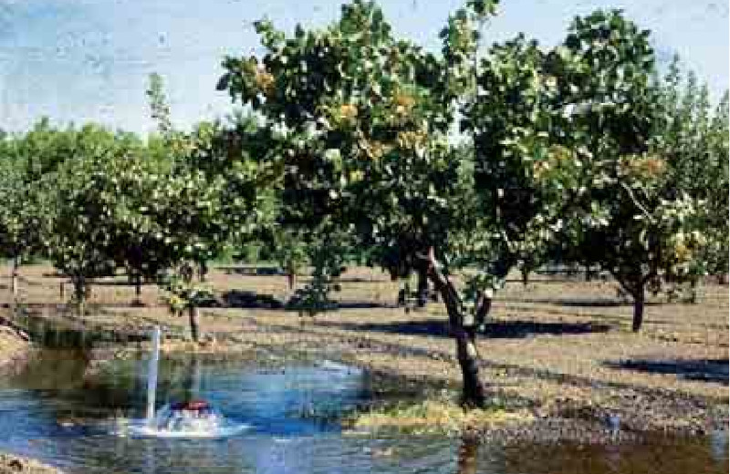
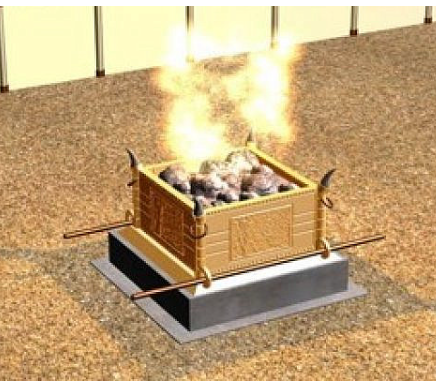
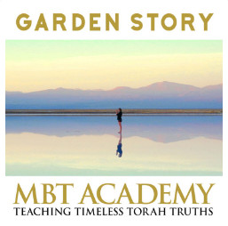
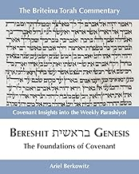

トーラーの週ごとの箇所
ブリテイヌ（Briteinu）による解説付き。
今週の箇所を読む（新しいタブで開きます）ようこそ！ モーセの時代にも真実でした。イェシュアの時代にも真実でした。そして…トーラーは今日も真実です。
イェシュアへの理解を深め、私たちがどのように生きるよう造られたのかを知りたい方にとって、ここは助けとなる場所です。

ブリテイヌ（Briteinu）による解説付き。
今週の箇所を読む（新しいタブで開きます）
Yo’el Berkowitzが、プリム祭の物語をレビ記1〜5章の礼拝の規定と結びつけます。
ハマンとモルデカイの違いを示し、エペソ人への手紙2〜3章がイェシュアのアシャム（罪過のためのささげ物）とどのようにつながるかを説明します。40MBのmp3録音、長さ80分。TRI-Hollandのウェブショップで入手できます。

創造の本来の物語を探ります。
私たちの父が、すべての被造物に対して初めに抱いておられた設計と意図が何であったかを知ることになります。そして、父のかたちに造られた父の子どもとして、自分自身を知るようになります。御父の設計をより深く理解することで、自分がどのような者として造られたのかが見えてきます。私たちの目的は何でしょうか。私たちは、他の人々や世界をどのように見るよう造られたのでしょうか。
この物語には、創造主が意図されたとおりに生きるための発想の転換をもたらす力があります ~ 初めに . . .
torahtruths.comで『Sitting Rooms』として提供しています。
教え
エルサレムの街角では青色を目にします。衣服や旗にも見られますが、信仰深いユダヤ人男性のズボンの脇に垂れ下がる房や、祈りのショールの四隅に下がる房にも見られます。
ヘブライ語でテケレット（תכלת）と呼ばれるこの青色には、聖書的にどのような意味があるのでしょうか。テケレットは、必ずしも青の色合いを表す言葉ではなく、特別な青い染料を作るための原料と製法を指す言葉です。
聖書はテケレットをさまざまな形で用いています。
6ページの記事「テケレット ― 契約の色」はこちらのリンクからご覧いただけます。
自分の霊的アイデンティティを知ることは、信じる一人ひとりの人生に大きな影響を与えます。気持ちや状況がどうであれ、神の王国の一員として歩む助けになります。
また、メシアのからだに属する他の人々を、彼らが絡め取られているかもしれない肉の姿にとらわれず、メシアにあって彼らが誰であるかに従って、敬意と恵みをもって扱う助けにもなります。
巧みに作られたこの物語は、イェシュア・メシアに本当に信仰を置いたすべての人の霊的な現実を力強く示しています。
イェシュア・メシアに信仰を置いたすべての人の霊的な現実には、三つの部分があります。
これらの概念はこの短い記事で詳しく見ることができます。
ユダヤの人々は毎日三回、週七日、こう祈ります。「主よ、私たちの神よ、あなたの民イスラエルとその祈りを喜んでお受けください。最も聖なるあなたの家での礼拝を回復してください。」イェシュアを信じるほとんどの人が理解していない、エルサレムにある神の家について、彼らは何を知っているのでしょうか。
イェシュアを信じる多くの人が、神の家がないことを大きな安堵であるかのように語ります。イェシュアが来て、いけにえを携えてその場所へ行くという重荷から自分たちを解放してくださったことをとても喜んでいる、としばしば言います。木の上での御死によってそのすべてが終わり、今や私たちはエルサレムの神殿にいなくても神の御前に自由に出ていける、と主張します。あたかも、昔の聖徒たちにはそれと同じ完全な自由がなかったかのようにです。
Ariel Berkowitzは、そうした誤った考えに異議を唱える、神の家の姿を示します。この学びは要約的な発表にすぎません。実際には、私たちがこれから概説する内容は、一冊の本でもっと丁寧に扱われるべきものです。ここでの目的は、関心を呼び起こし、意欲をかき立て、この主題についてさらに学ぶよう励ますことだけです。
この学びはTRI Hollandのウェブサイトで、動画（120MB、75分）とPDF形式のノートとして提供されています。
誕生日はたいてい楽しい日です。今日は、教会が生まれた日について考えてみましょう。もちろん、意見はいくつかあります。教会をどう定義し、それはいつ「生まれた」のでしょうか。いくつかの選択肢です。
あなたはどう思いますか。そして、その答えの根拠は何ですか。
詳しくは、Ariel Berkowitzによる6ページの文書をご覧ください。
2007年にオランダで開かれたアラブ・ユダヤ和解会議で、参加者は次の質問に答えを書きました。
TRIからのその他の資料
…水路のそばに植えられ、季節ごとに実を結ぶ…（詩篇1:3）どうすれば実を結べるでしょうか。それはどのようにして起こるのでしょうか。
トーラーの学び方（新しいタブで開きます）Sha’ulのガラテヤ人への手紙はどうでしょうか。聖書の最初の五書の実践は、イェシュアを信じる人には禁じられているのでしょうか。それとも…トーラーは信じる人の日常生活に意味のある場所を持っているのでしょうか。
確かめてみましょう（新しいタブで開きます）あなたは誰ですか？恵みによって救われた「ただの」罪人ですか？望みのない罪人でしたが、今はイェシュアの義を着ている者ですか？それとも…恵みによって救われた聖徒ですか？あなたの根本的なアイデンティティは完全に変えられました。
TRIHolland.nlでダウンロード（新しいタブで開きます）こうした言葉を使うと、律法主義が入り込む扉が大きく開かれてしまいがちです。
torahresourcesinternational.comで読む（新しいタブで開きます）書籍

トーラーの本文を歴史的・地理的・文化的な背景の中でどう理解すればよいのでしょうか。この巻は、週ごとのトーラーの箇所を解説しています。各箇所の終わりには学びのための問いがあります。ブリテイヌ注解シリーズは、トーラーの五書を「契約」という共通のテーマで結びつけます。
注文する（新しいタブで開きます）『Torah Rediscovered』は、ユダヤ人にも非ユダヤ人にも、聖書の最初の五書（トーラー）の本当の姿を率直に見直すよう、愛をもって促します。神の契約による啓示の美しさと深さを明らかにします。
注文する（新しいタブで開きます）『Take Hold』は、預言の箇所であるゼカリヤ書8:23を詳しく解き明かした本です。世界の諸国民のうちイェシュアを信じる人々が、イスラエルの地、民、聖書との神的なつながりを表す時を描いています。
注文する（新しいタブで開きます）ようこそ！ Torah Resources Internationalの中心は、創世記から黙示録まで、トーラー全体を学ぶことを通して、生ける言葉であり救い主（メシア）であるイェシュアを知ることです。聖書的でヘブライ的なトーラーの理解を広め、人々がイェシュアへの理解を深め、私たちがどのように生きるよう造られたのかを知ることを願っています。
教材を作成・出版し、オンラインと対面の両方で教えることを通して、メシアのからだに仕える資源となりたいと考えています。
Torah Resources Internationalの目的は、聖書の神に栄光を帰することです。とりわけ次の方法で行います。